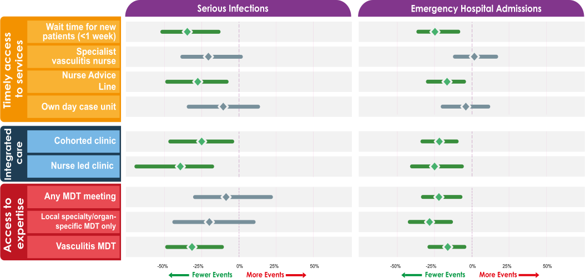
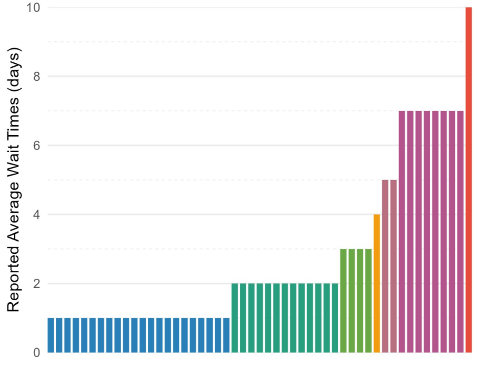
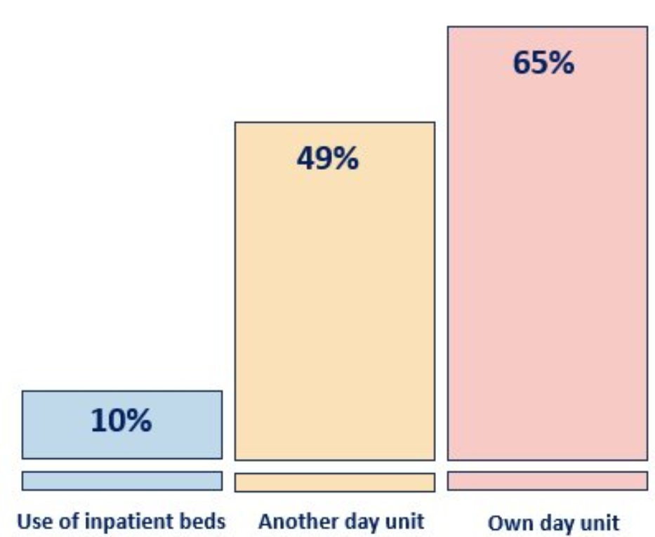

Key service components associated with better patient outcomes
The content of this toolkit is based on the VOICES study -Vasculitis Outcomes In relation to Care
ExperienceS - which examined how vasculitis services are organised and delivered across the UK and
Ireland, and how different service components relate to patient outcomes.
VOICES brought together evidence from a survey of vasculitis services, interviews with patients,
organisational case studies and linked routine health data. The study identified key components of vasculitis
care associated with better outcomes, including fewer serious infections, fewer emergency hospital admissions
and, in some contexts, reduced mortality.
Across the study, effective vasculitis care was characterised by timely access to specialist expertise,
integrated working across teams, continuity of care, and services that helped patients feel safe. These
components provide the basis for the toolkit and are intended to help services consider how best to organise
care locally.
Recognising that some service components are interdependent and often co-exist together within care delivery systems, this guidance should be considered as a holistic package to improve the whole care pathway.
Find out more
about the VOICES study.
Timely access to care
- Timely diagnosis is essential in preventing mortality and morbidity
- “Streamlining” the whole diagnostic pathway is important, not just waiting times once the referral has been made. This includes awareness of vasculitis, knowing which tests to do, where to send them and who to contact.

Hollick et al. (2024). The Lancet Rheumatology, Volume 6, Issue 6, e361 – e373
Evidence from VOICES study
Patients looked after in services who were able to see new patients with suspected vasculitis within 7 days had 30% fewer serious infections, 22% fewer emergency admissions to hospital and a 41% reduction in mortality.
What does this look like for patients?
“I had such an incredibly intuitive [general practitioner] who did the bloods that day, and…an amazing team at the [hospital], to quickly read those results and to fast-track that treatment for me. Because I do know that they saved my kidneys.”
- Timely access to intravenous immunosuppressant therapy is essential to effectively manage ANCA-associated vasculitis.
- Organisations should ensure access to urgent IV treatment for AAV within 7 days and provision of appropriately trained staff to do so.
- Where treatment is delivered via other units, greater awareness of AAV would help provision of information and support for patients.


Warren James, Avril Nicoll, Louise Locock, Lorraine Harper, Mark Little, Neil Basu, Rosemary J Hollick, P184 Geographical variations in delivery of intravenous treatments for ANCA-associated vasculitis, Rheumatology, Volume 63, Issue Supplement_1, April 2024, keae163.223, https://doi.org/10.1093/rheumatology/keae163.223
Evidence from VOICES study
Services faced significant challenges in prescribing and delivering high-cost drugs to manage systemic vasculitis: balancing accountability versus bureaucracy, and tensions between different specialties looking after vasculitis patients when implementing access to high-cost drugs via multi-disciplinary networks. There was significant variation in how services delivered intravenous treatments: 10% used inpatient beds; 35% accessed another specialty unit or shared a daycase facility; 65% used their own specialty daycase unit. Average wait time for urgent IV treatment was 2.67 days (range 1-10 days). 18% of services had waiting times >7 days, and of those 67% accessed intravenous treatments via another daycase facility.
What does this look like for patients?
“they couldn’t get me booked in right away because there just wasn’t space in the ward. You have to get your slot. So I had to have three methylprednisolone infusions, and this is where they just put a massive dose of steroids straight in your bloodstream. … that little episode cost me two vertebrae in my spine.”
Integrated care
- With cohorted clinics patients with systemic vasculitis are grouped together and seen in a dedicated clinic.
- Cohorted clinics enable clinicians to: ‘get into vasculitis mode’; protocolise management and proactively plan care; support continuity of care and build therapeutic relationships; audit outcomes; recruit to clinical trials; and develop local vasculitis networks.
- Provision of cohorted clinics is a proxy for visible and accessible vasculitis expertise.
- Timely access to intravenous immunosuppressant therapy is essential to effectively manage ANCA-associated vasculitis.
Hollick et al. (2024). The Lancet Rheumatology, Volume 6, Issue 6, e361 – e373
Evidence from VOICES study
Patients looked after in services with cohorted clinics had 25% fewer serious infections and 19% fewer emergency admissions to hospital.
What does this look like for patients?
“what I do like about the way they go about their business … every time I go in, they take a urine sample, a blood sample … and … they reach out to the [ear, nose, and throat] department, or to maybe the chest department, or speech [and language therapy]…”
- Vasculitis specialist nurses play a key role in coordinating care, supporting medication management and patient education, and providing a more holistic approach to care.
- They also help build trusting therapeutic relationships, enabling patients to raise concerns more openly, while increasing service capacity for timely review.
Hollick et al. (2024). The Lancet Rheumatology, Volume 6, Issue 6, e361 – e373
Evidence from VOICES study
Patients looked after in services with nurse-led clinics had 35% fewer serious infections and 25% fewer emergency admissions to hospital.
What does this look like for patients?
“Because I’m their ‘go to’, the nurse that they see the most … they’ll talk to me about everything, so sometimes it’s relationship and sex advice … A lot of it is managing the side effects of their medication and flares.”

Access to expertise
Nurse-led advice lines provide a single point of contact into the vasculitis service for patients and should be supported by clear escalation pathways.
Hollick et al. (2024). The Lancet Rheumatology, Volume 6, Issue 6, e361 – e373
Evidence from VOICES study
Patients looked after in services with access to a nurse advice line had 24% fewer serious infections and 15% fewer emergency admissions to hospital.
What does this look like for patients?
“If I'm not sure on anything I ring her and I've got a direct number… so if I'm thinking, 'Hang on, that doesn't look right…’ Or there was a doctor looked at my bloods and he says, 'Oh, I think you should stop this [medication].’…and then the vasculitis nurse rang me and said, 'No, that figure's good.’”
- Regular specialist vasculitis MDT meetings support multi-specialty discussion and coordinated decision-making - “getting the right people together in a room talking”.
- Professional tensions (between specialties, professionals, and localities) that impact on care are more likely to be acknowledged and addressed.
Hollick et al. (2024). The Lancet Rheumatology, Volume 6, Issue 6, e361 – e373
Evidence from VOICES study
Patients looked after in services with vasculitis specialist MDT meetings had 28% fewer serious infections and 14% fewer emergency admissions to hospital.
What does this look like for patients?
“The renal consultants and the rheumatology consultants work as a multidisciplinary team for people with vasculitis. They talk to each other before they make a decision, such as whether I need another rituximab treatment”